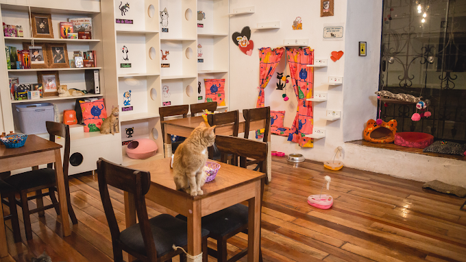
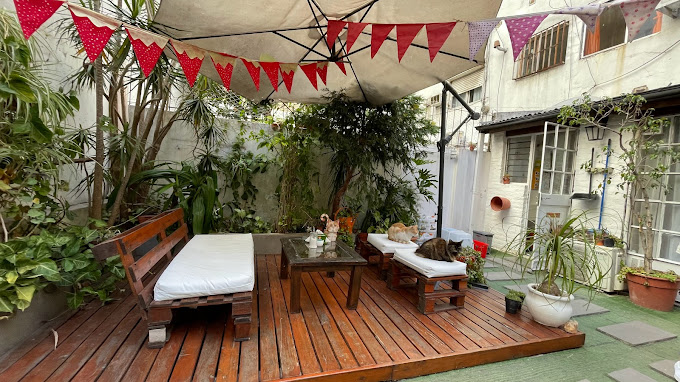

Ya conoces la mejor forma de disfrutar nuestras recetas, ahora... ¡Conoce buenos lugares!

CATFETIN CAT CAFÉ
"Catfetín is Peru's first Cat Café. Come enjoy organic coffee, homemade desserts, board games, coloring pages and books with the company of adoptable cats."
Dirección: C. Maruri 320, Cusco 08002, Perú
Reservas: catfetin.com

CAT CAFÉ BUENOS AIRES
"Café con gatos no es un bar, ni una confitería, es un pequeño lugar muy especial, para tomar cafe, comer algo rico y hacer gatoterapia. Es un espacio totalmente gatificado, que además funciona como punto de adopción."
Dirección: Jean Jaures 675, C1215 CABA
Reservas: cat.cafe.buenosaires